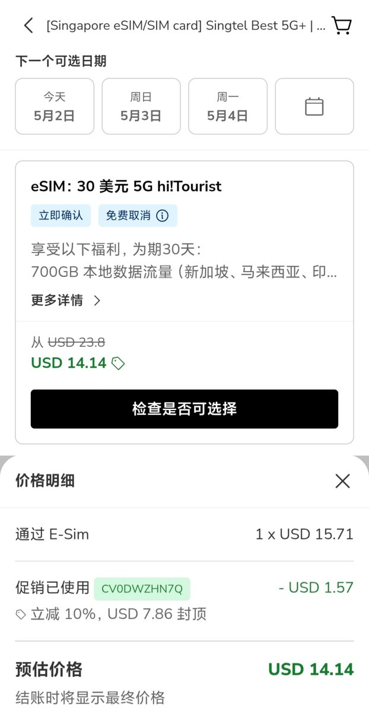
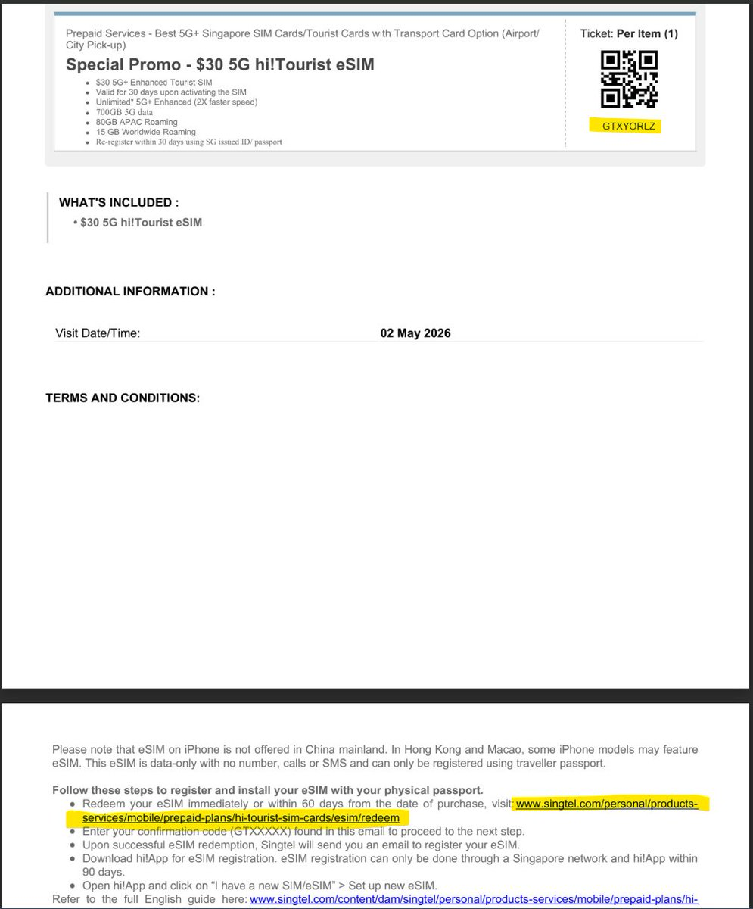
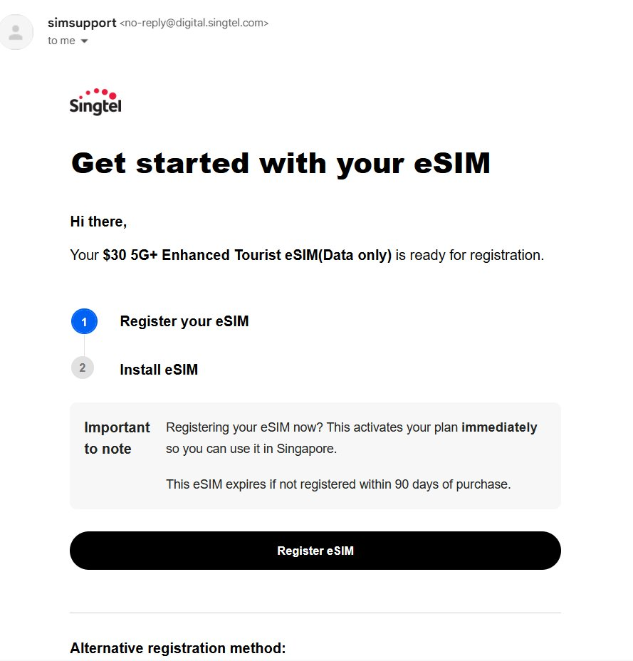

更低价购买Singtel 30SGD游客卡的方法来啦，Pelago上面的Singtel卡有折扣，相当于97CNY得700GB（新加坡、马来西亚、印尼、香港、泰国）+80GB亚太（含中国内地、日本、韩国等）+15GB全球漫游
相当于在中国大陆能用95GB，平均下来接近1G一块钱，性价比不错。除了要kyc实名认证，若没有SingPass将只有流量功能，相当于纯流量卡。续费3SGD一天不如月抛，所以当月抛卡就好
接下来介绍怎么买，先注册Pelago帐号👉🏻 https://t.co/p6Ih5zmFyD 领取10％优惠，然后到购买页👉🏻 https://t.co/CNa7SjsHWq 下单。买完后会给个兑换码，用电脑到Singtel的官网操作一下（手机版有兼容问题）就可以使用了
超大流量利好假期玩遍东南亚，不过遇到限速需修改apn为hicard或e-ideas解除限速


相当于在中国大陆能用95GB，平均下来接近1G一块钱，性价比不错。除了要kyc实名认证，若没有SingPass将只有流量功能，相当于纯流量卡。续费3SGD一天不如月抛，所以当月抛卡就好
接下来介绍怎么买，先注册Pelago帐号👉🏻 https://t.co/p6Ih5zmFyD 领取10％优惠，然后到购买页👉🏻 https://t.co/CNa7SjsHWq 下单。买完后会给个兑换码，用电脑到Singtel的官网操作一下（手机版有兼容问题）就可以使用了
超大流量利好假期玩遍东南亚，不过遇到限速需修改apn为hicard或e-ideas解除限速



SingTel Prepaid游客配套还不错，如果有原生新加坡IP的用户可以考虑整一个来玩玩，30新币一个月。由于没有SingPass的原因，因此无法激活语音和短信功能，相当于是一张纯数据卡
通过kyc后可激活数据流量，每本护照90天内最多激活3张。虽然可一直续约，但价格是1天3新币不如新开，所以当月抛最好 https://t.co/xI4trYlqBY
通过kyc后可激活数据流量，每本护照90天内最多激活3张。虽然可一直续约，但价格是1天3新币不如新开，所以当月抛最好 https://t.co/xI4trYlqBY